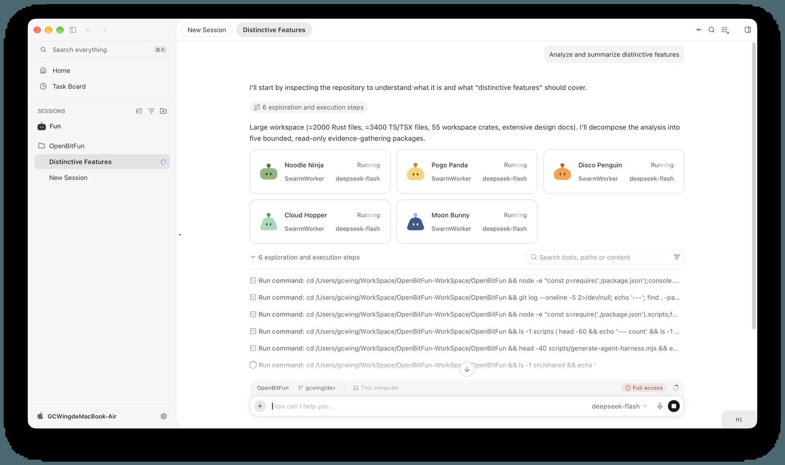

消息锚点导航：对话左侧那排「钢琴键」，各家怎么做
对话区左侧那排短横线，口头叫「钢琴键」，专业名称是消息锚点导航（message anchor navigation），各家文档里也叫 conversation navigator、conversation timeline、message locator。它是一份以用户消息为锚点的目录：每根刻度对应一条提问，当前位置高亮，悬停浮出这条提问，点击跳过去。本页对照 Codex、Antigravity、OpenBitfun、WorkBuddy、CodeBuddy 和 Claude Code，更正上一版「把刻度当成轮次计数」的误读，再落到 DevEco Code。
01结论
- 锚点是用户的提问，不是「轮」，也不是内容长度。Codex 的悬停卡显示的就是那条提问的原文开头；Antigravity 官方说明是「每个 turn 一个点，悬停看这一轮的 prompt、回复预览和发送时间」。AI 回复、工具调用都挂在提问下面，不单独占刻度。
- Antigravity 在长对话上走得最远。2.28.1（2026-10-28）上线 conversation navigator；2.29.0 给长对话的「章节」加了 AI 生成的短标题；2.30.0 修了「对话末尾高亮错位」和「对话宽度设为 Fill 时消失」。长对话按日期分章节、章节可折叠——这正是上一版纠结的「刻度放不下怎么办」的官方答案。
- Codex 有官方的导航轨，但各端不一致。2026-06-27 OpenAI 官方宣布长线程新增 navigation rail：悬停预览附近轮次、点击跳转。我们的截图里还有带书签的悬停卡；但 GitHub 上同时有人说新版统一桌面端里「时间线不见了」（#35071）、标记在某些侧栏宽度下消失（#32015）、VS Code 插件里没有（#31104）。截图只代表截图那个版本。
- WorkBuddy 也是刻度导航，而且官方文档写得最完整。对话右侧一条竖向刻度，每条刻度对应一条提问，当前提问刻度更长更深；鼠标移上去会把整条刻度展开成提问列表（只列提问、过长截断），点列表项或刻度都能定位，滚动时同步。它把「刻度省空间」和「列表能扫读」合在了一个控件里。CodeBuddy JetBrains 插件写的是「历史提问分段懒加载与跳转定位」，形态待确认。
- Claude Code 的 /rewind 不是同类。它解决「退回到某一步」（代码、对话或两者），不是「浏览并跳到某条提问」。放在表里只作对照。
- DevEco Code 建议：一条提问一根刻度，长对话按任务或时间分章节，预览先去掉 Markdown。Codex 的预览直接截原文，
\ **01.【单选题】…这种符号都露出来了，这是可以直接避开的坑。
02它是什么
按 Codex 截图重画的示意（不是像素复刻）。它和三个相近概念容易混：Minimap 展示内容本身的形状，滚动条按内容长度映射位置，scroll-spy 只是「滚动时高亮当前目录项」这一个行为。消息锚点导航是「目录 + scroll-spy + 悬停预览 + 点击跳转」的组合。
- 1刻度轨
- 贴对话区左缘，每条提问一根短横线，等距排列。常态很淡，只表达「有多少条、分布在哪」。
- 2当前锚点
- 视口所在的那条最长最深，相邻几根逐级加长，在细轨上形成一个「鼓包」。
- 3滚动联动
- 滚动对话时当前锚点跟着走，不操作也能回答「我在哪」。
- 4悬停预览
- 浮层卡片显示提问开头一行，超长截断；不推挤对话内容。
- 5附加动作
- Codex 在卡片右侧放书签。点击刻度或卡片本体则跳转。
03总表
形态一列：刻度刻度轨，列表提问列表，回退检查点回退。
| 产品 | 形态 | 锚点单位 | 悬停预览 | 跳转与其他动作 | 长对话 |
|---|---|---|---|---|---|
| Antigravity2.28.1 起 | 刻度左缘，一 turn 一个点官方 | turn | prompt + 回复预览 + 发送时间官方 | 点选跳转官方 | 按日期分章节、可折叠，章节有 AI 短标题官方 |
| Codex桌面 App | 刻度左缘细刻度轨，当前最长官方截图 | 用户提问 | 悬停预览附近轮次官方；提问原文一行，Markdown 未清洗截图 | 点击跳转官方；书签截图 | 待确认 |
| OpenBitfun | 刻度左缘，当前区段加宽变深截图 | 浮卡写「第 N 轮」待确认 | 「第 136 轮」+ 提问首句截图 | 点击跳转（用户确认） | 待确认 |
| WorkBuddy主窗口本地任务 | 刻度右侧竖向刻度，当前更长更深官方 | 用户提问 | 悬停把刻度展开成全部提问列表，只列提问、过长截断官方 | 点列表项或刻度定位官方；顶部另有「历史提问」按钮、对话内搜索 | 达到一定轮数才出现；对话区太窄时自动隐藏官方 |
| CodeBuddyJetBrains 插件 | 列表形态待确认 | 用户提问 | 待确认 | 跳转定位官方 | 分段懒加载官方 |
| Claude Code | 回退/rewind 或连按 Esc官方 | 每次发送一个检查点 | 检查点列表 | 回退代码、对话或两者 | 保留最近检查点 |
读法：做了刻度式锚点导航的是 Antigravity、WorkBuddy、Codex、OpenBitfun 四家；有官方说明的是 Antigravity、WorkBuddy 和 Codex。Antigravity、Codex、OpenBitfun 放左侧，WorkBuddy 放右侧。
04各产品
每张卡列出做法和依据，截图放在卡片顶部，底部一行是值得借鉴的地方。
Antigravity
Antigravity App 2.x · conversation navigator
materials/screenshots/antigravity-navigator.png- 形态
- 对话左缘一条轨，每个 turn 一个点；悬停看该轮 prompt、回复预览和发送时间，点选跳转。2.28.1（2026-10-28）上线。官方
- 长对话
- 按日期分章节、章节可折叠；2.29.0（2026-11-03）起折叠的章节卡显示 AI 生成的短标题，而不只是日期。官方
- 修复
- 2.30.0（2026-11-09）修复「对话末尾高亮了错误的 turn」和「对话宽度设为 Fill 时导航消失」。官方
- 截图
- 12 根刻度，第 6 根加高变深，悬停卡「6 of 12」+ 2026年11月17日 19:13 + 消息全文。截图官方更新日志没有提「N of M」计数，CLI 仓库的 #1283 是用户提议，可能是后加的。推断
Codex
桌面 App · VS Code 插件
materials/screenshots/codex-navigation-rail.jpg- 官方
- 2026-06-27 OpenAI Developers 公告：长 Codex 线程新增 navigation rail，悬停在边栏上预览附近的轮次，点击直接跳到那一点，不用滚完整个对话。官方
- 截图
- 用户截图（2026-11-18）：左缘等距短横线，当前锚点最长最深、前后逐级变短；悬停卡一行，内容是那条提问的原文开头，
\ **01.【单选题】…的 Markdown 符号没有去掉；卡片右侧有书签图标。截图 - 各端差异
- OpenAI 社区帖：Windows 统一桌面 App 的 Codex 视图有提问刻度轨，同一 App 的 Chat 视图没有，官方人员回复会转达「各视图统一」的需求。#35071：Windows 新版统一桌面端里「时间线不见了」；#32015：macOS ChatGPT App 26.707 右侧白色小标记在侧栏拖到某些宽度时消失；#31104：VS Code 插件没有。社区
- 用户在要
- 轮次导航器（#20651）、上一条 / 下一条（#44864）、导航轨（#37243）、可导航的开发历史（#55775）。2026-03 的 26.323 加的是跨会话搜索，不是会话内定位。社区
OpenBitfun
桌面端
materials/screenshots/openbitfun-session.jpg- 截图
- 常态刻度约 9×4px、间距 18px，可见约 86 根；当前区段 7 根加宽到 15–20px，中心一根变深；连接线指向浮卡，浮卡写「第 136 轮」和提问首句。截图
- 跳转
- 点击跳到该条。（用户确认）
- 数量差
- 可见 86 根而浮卡写到 136：更可能是轨道只显示了一部分（可滚动或只显示附近），而不是「合并成段」。静态截图无法判定。待确认
WorkBuddy 与 CodeBuddy
腾讯 · WorkBuddy 桌面端 · CodeBuddy IDE 插件
materials/screenshots/workbuddy-question-nav.png- 刻度导航
- 对话较长时，对话区右侧出现竖向刻度导航，每条刻度对应一条提问，当前所在的提问刻度更长、颜色更深；作用与顶部「历史提问」按钮相同，但不用点按钮。官方
- 悬停
- 鼠标移到刻度条上，展开全部提问列表：只显示提问，不显示回复，过长的提问截断。官方
- 跳转
- 点列表中任一条提问，或直接点刻度，对话区定位到这一条；手动滚动时导航上的当前位置同步变化。官方
- 出现条件
- 达到一定轮数后才出现，提问很少时不显示；对话区太窄（如打开右侧详情面板）时自动隐藏，收起面板或拉宽窗口后重新出现；仅主窗口的本地任务提供，独立窗口和云端任务不显示。官方
- 回退
- 回退不挂在导航上：悬停在自己发的消息上，出现复制、回退、编辑三个按钮；回退一定弹确认框，并说明产物是否一起回退。官方
- CodeBuddy
- IDE 侧栏 History 列出历史会话，可回到会话继续、导出、编辑、删除。官方JetBrains 插件更新日志：「历史提问分段懒加载与跳转定位」，具体形态待确认
materials/screenshots/workbuddy-rewind-entry.pngClaude Code
终端 · IDE · 桌面- 做法
- 没有会话内目录。
/rewind（或空输入框连按两次 Esc）打开检查点列表，可回退代码、对话或两者；每次发送提示建立一个检查点，随会话保存，恢复会话后仍可回退。官方 - 为什么不同类
- 回退改变状态，导航只改变视口。把两者放在同一个入口，用户会担心「点一下会不会把后面的都丢了」。推断
05六个设计决策
做一个消息锚点导航要定六件事。每张卡写问题、各家的选择和我们的倾向。
① 锚什么
一根刻度对应一条提问、一轮问答，还是一段内容？
② 刻度长短表示什么
消息长度、重要程度，还是离当前多远？
③ 预览给什么
逐根悬停看一条，还是一次展开全部提问？
④ 放左边还是右边，什么时候出现
贴对话左缘还是右缘？短对话要不要显示？
⑤ 长对话怎么放
压扁间距、轨道自己滚动，还是分章节折叠？
⑥ 除了跳转还能做什么
书签、复制、从这里重来？
06上一版更正
- 把刻度当成了「轮次计数器」。上一版以「86 根键对不上第 136 轮」立论，推出「必须按轮合并成段」。实际各家锚的是用户提问；数量对不上更可能是轨道只显示了一部分。长对话的正解参照 Antigravity：分章节，而不是合并刻度。
- 把「回到最新」「目录大纲」当成了并列方案。刻度和列表是同一个目录的两种呈现，「回到最新」是所有跳转方案都要带的兜底；Claude Code 的回退不在这个比较里。
- 漏看了 Codex 的预览内容和书签。上一版把 Codex 刻度旁的浮层当成输入建议。新截图清楚显示悬停卡就是那条提问的原文，右侧有书签。
- 把 WorkBuddy 归成了「没有刻度的列表」。WorkBuddy 官方文档写明对话右侧有竖向刻度导航，悬停才展开成提问列表；上一版只看到展开后的列表。
07对 DevEco 的建议
- 一条提问一根刻度。AI 回复、思考、工具调用都归在提问下面。预览里写「第 N 条提问」，不用「轮」这种要解释的词。
- 刻度等距，长度只表达离当前多远。当前最长最深，相邻两三根递减，其余统一最短最淡。
- 滚动联动。视口顶部所在的提问就是当前锚点。
- 悬停展开为提问列表。参照 WorkBuddy：鼠标移上刻度轨，整条展开成全部提问，每行去掉 Markdown 再截断，带序号，当前一条加粗；浮层不推挤对话。键盘聚焦等价悬停。
- 点击跳到提问顶部，离开底部后出现「回到最新」。键盘 ↑ ↓ 移动、Enter 跳转、Esc 收起。
- 出现条件写清楚。参照 WorkBuddy：提问少于阈值不显示，对话区太窄时隐藏；位置建议放对话区右缘，避开左侧文件树。
- 长对话分章节。刻度命中区域不小于 8px，放不下时按任务（或时间）分章节、可折叠，章节名可由 AI 生成——参照 Antigravity 2.29.0。
- 书签作为候选。参照 Codex；被标记的刻度常显强调色。回退类动作不挂在导航上。
预览文本由原文去掉 **、#、\、反引号后截断；跳转误差 = 点击后实际 scrollTop 与目标值之差（对应 AC-3）。
08验收条件
- 每条用户提问对应且仅对应一根刻度。断言：刻度数 = 用户消息数；AI 回复不产生刻度。
- 常态轨道宽度不超过 32px，不遮挡对话。断言：轨道与对话区不相交；窄屏（< 720px）收起为按钮。
- 点击跳到提问顶部，误差不超过 2px。断言：下一帧
scrollTop与目标之差 ≤ 2px。 - 滚动时当前锚点与视口顶部的提问一致。断言：偏差 ≤ 1 条；对话末尾也不错位（Antigravity 2.30.0 修过的就是这个）。
- 预览为一行纯文本，不改变对话布局。断言：不含
**#`；预览出现前后对话首个可见块位置不变。 - 键盘可达。断言：不用鼠标也能预览并跳到任意一条。
- 离开底部后出现「回到最新」。断言：点击后当前锚点 = 最后一条；在底部时按钮不显示。
09待验证
- Codex：书签标记后在哪里看；Chat、Work、Codex 各视图和 VS Code 插件之间是否会统一。
- Antigravity：「6 of 12」计数是哪个版本加的；章节切分规则除了日期还有没有别的；官方文档和更新日志都没有导航的界面截图，需要实机截图。
- OpenBitfun：「第 136 轮」的计数单位；可见 86 根是否因为轨道可滚动。
- CodeBuddy：「跳转定位」在 IDE 里具体长什么样，需实机截图。
- DevEco Code：对话流实际渲染与「一条提问」的边界（追问、补充附件算不算新提问）。
10来源
- Antigravity 更新日志（2.28.1 conversation navigator、2.29.0 章节 AI 标题、2.30.0 修复，2026-10-28 至 11-09）
- google-antigravity/antigravity-cli#1283 轮次导航与「Turn N of M」提议
- OpenAI Developers on X（2026-06-27）：Long Codex threads now have a navigation rail（Codex 截图取自所附视频封面）
- OpenAI 社区：User Message Navigation Markers
- OpenBitFun README（会话截图 openbitfun-desktop-session.png）
- openai/codex#35071 恢复会话时间线 / 消息定位器
- openai/codex#32015 导航标记在某些侧栏宽度下消失
- openai/codex#31104 对话内轮次缩略导航（VS Code 缺失）
- openai/codex#37243 消息导航轨
- openai/codex#20651 轮次导航器 · #44864 上一条 / 下一条 · #55775 可导航的开发历史
- Codex App 26.323：跨会话搜索与键盘导航
- Claude Code 文档：Checkpointing
- WorkBuddy 文档：任务对话（刻度导航、历史提问、回退；两张截图取自此页，2026-11-19 下载）· CodeBuddy 文档：History · CodeBuddy JetBrains 插件更新日志
- Codex（2026-11-18）、OpenBitfun、Antigravity 截图：用户提供
- 会话单元显示竞品分析